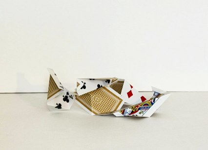
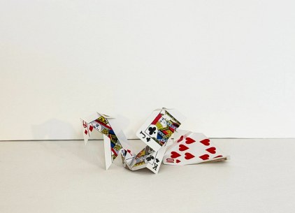
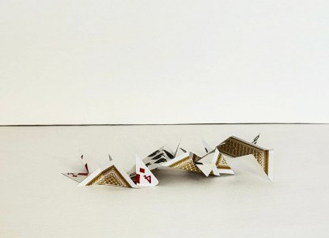
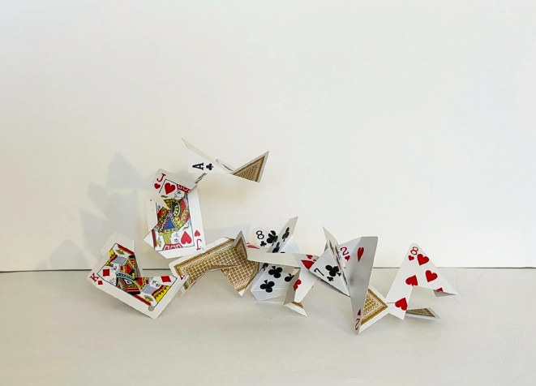

Clowns Series
Clown Series brings together imagined clown figures, animals, and symbolic objects to explore the delicate space between absurdity and sincerity. These characters inhabit moments of uncertainty, carrying traces of vulnerability, loyalty, solitude, and quiet humor. Within their playful gestures, they reveal the contradictions of human nature and the resilience hidden beneath them.
Drawings
5 pieces


Cut Playing Cards
4 piecesPlaying cards are governed by specific rules of play; yet here we encounter them cut and fractured. It is as though we are seeking to assign them another meaning, or perhaps simply to construct another game. The breaking and folding that alter their static condition feel, to me, like an act of audacity — a gesture of playfulness toward the rules of the game itself. This intervention also reflects my broader interest in displacing objects from their original functions, allowing them to move beyond their prescribed roles and inhabit another possibility.



